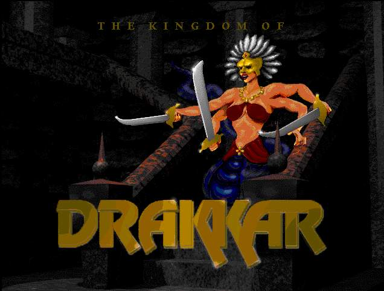

| Reference Library |
| |
| Nork Information |
| Mjorin Information: Sub area of Nork |
| Aleria Information |
| Cobrahn Information |
| Nameless Lands Information |

| PREFACE: |
| * Preface 3/9/2004 --- Read about why I made this site |
| NEWS : |
| I'm looking for information on Nameless or any other submissions about Drakkar. Click to start your adventure and Join Drakkar NOW! Help support this site and Thanks very much !!! 4/04/09 Qwerty__DOA sends in this update for the Bresh Stiletto When I was looking for info on the Bresh Stiletto I noticed it wasn't complete...the Bresh Stiletto I have is +6 , glowing , silver , returning and has poison on it. This makes a lot of difference because with silver and glowing you can use the weapon on all crits , without it it would be useless agains laircrits. You can find the updated weapon here >> Nork Weapons Keep the corrections or any information coming...Thanks !!! 4/28/08 Justin S. sends in this tip for updating Alerian g/g e/e n/n quests hi, your alerian quest information is missing pieces. before starting either of the g/g e/e n/n quest...you need to go Loranon and say Lor, sever . you have to break off any existing allegiance or otherwise all the stuff you do will be wasted if you're attached to another allegiance. also, you're missing something you should do at the beginning of the g/g quest. you need to go to Eldoral (located in town) and say Eld, allegiance. if you do not do this, you're wasting your effort doing anything else. Keep the corrections or any information coming...Thanks !!! 4/28/08 Sara a.k.a Stelmaria----main crit- Galadriel_INIT a 15/13 Mentalist. sends in this tip. Updated Goblin Lord Quest : Sara discovered Pelagus was not Pelagus, but Pelagis in this quest description. So I updated it with the correct spelling and added her comments to make completing the quest easier. Keep the corrections or any information coming...Thanks !!! 9/07/07 Wedge____priah sends in this tip. In Aleria, Queen Seldari -2 is a good place to find all sorts of 4/4, 0/5 rings, camo cloaks and I found a dread long sword there as well. Eyes also drop here. 9/03/07 Jimmy Whitaker sent in the following tip In the Mummy King Quest, you have to type in "war,sell" to get the ammy from him, not trading in theusual way where you just click on the npc and gethanded the items. 8/30/07 Ok I have restored this site and will keep it up, but I hope people will take a few minutes to email me when they have information that is not on this site, but would be helpful to the KOD community. I have reset the forums because of all the unauthorized adult postings, just incase anyone does want to post it is back online :) I put all this information together on my site with the permission from the awesome folks who provided it. Without their outstanding effort and dedication to KOD, my site would be useless. So please give back to the KOD community with any useful information you may come across or already know. Happy hunting and enjoy my site !! 6/28/07 Tyler Logsdon did some testing with the Cobrahn Arun Staff and found it also gives +2 Psi skill for Ments and is not a Healer only Staff. Thanks for this information and I have updated the Cobrahn weapons page with this information! |
| Disclaimer |
| Posted By: Tantheus Date: 2/27/2004 Most information gathered on this site was taken from the Referenced Fan site links and Drakkar forums. I wanted to create a one stop web site for Kingdom of Drakkar information. I found many dead links when researching information on Kingdom of Drakkar and I wanted to preserve the information I found before another site went offline. |
| Copyright 2004 (Tantheus' Drakkar Page). Site Designed by Tantheus. All Rights Reserved. |
| Official Site |
|  |
| Tantheus Update : 7/18/04 |
| - Exp Level : 1 - Mentalist Skill Level : 10 - Staff Skill Level : 7 - HPs : 188 - EPs : 34 |